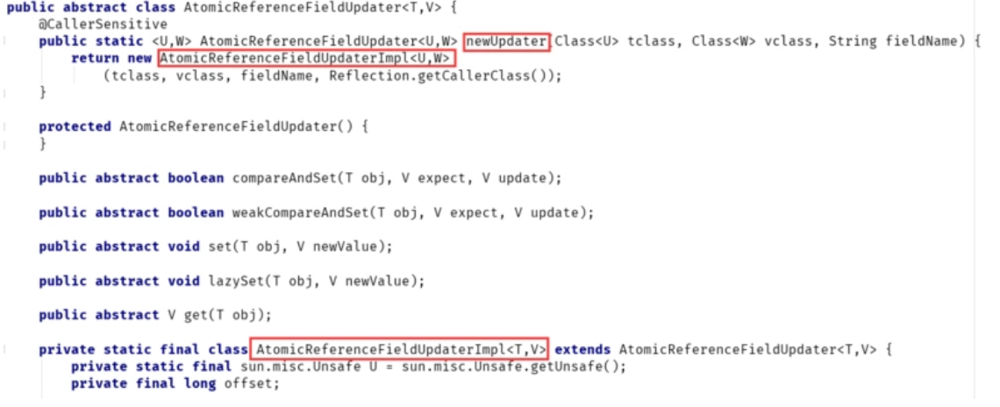

在java.util.concurrent.atomic包中，由三个比较特殊的原子类：AtomicIntegerFieldUpdater、AtomicLongFieldUpdater、AtomicReferenceFieldUpdater。
通过名称可以看到，这几类的功能大致相同，只是针对的类型有所不同。
一、什么是FieldUpdater
所谓AtomicXXXFieldUpdater，就是可以以一种线程安全的方式操作非线程安全对象的某些字段。光这么说有点难理解，我们通过一个例子来看下。
假设有一个公司账户Account，100个人同时往里面存钱1块钱，那么正常情况下，最终账户的总金额应该是100。
先来看下线程不安全的方式：
*账户类：*
class Account {
private volatile int money;
Account(int initial) {
this.money = initial;
}
public void increMoney() {
money++;
}
public int getMoney() {
return money;
}
@Override
public String toString() {
return "Account{" +
"money=" + money +
'}';
}
}
*调用类：*
public class FieldUpdaterTest {
public static void main(String[] args) throws InterruptedException {
Account account = new Account(0); // 初始金额0
List<Thread> list = new ArrayList<>();
for (int i = 0; i < 100; i++) {
Thread t = new Thread(new Task(account));
list.add(t);
t.start();
}
for (Thread t : list) { // 等待所有线程执行完成
t.join();
}
System.out.println(account.toString());
}
private static class Task implements Runnable {
private Account account;
Task(Account account) {
this.account = account;
}
@Override
public void run() {
account.increMoney(); // 增加账户金额
}
}
}
上述未对Account做并发控制，最终账户金额很可能小于100。
按照之前学习的atomic框架，可以将Account类的int类型字段改为AtomicInteger，或者在Task任务类中，将所有涉及到共享变量的地方都加锁访问。
那么，还有没有其它解决方式？
本章开头我们讲到，AtomicXXXFieldUpdater可以以一种线程安全的方式操作非线程安全对象的某些字段。
这里，Account就是非线程安全对象，money就是需要操作的字段。
我们来对上述代码进行改造：
*账户类Account改造：*
class Account {
private volatile int money;
private static final AtomicIntegerFieldUpdater<Account> updater = AtomicIntegerFieldUpdater.newUpdater(Account.class, "money"); // 引入AtomicIntegerFieldUpdater
Account(int initial) {
this.money = initial;
}
public void increMoney() {
updater.incrementAndGet(this); // 通过AtomicIntegerFieldUpdater操作字段
}
public int getMoney() {
return money;
}
@Override
public String toString() {
return "Account{" +
"money=" + money +
'}';
}
}
*调用方，并未做任何改变：*
public class FieldUpdaterTest {
public static void main(String[] args) throws InterruptedException {
Account account = new Account(0);
List<Thread> list = new ArrayList<>();
for (int i = 0; i < 100; i++) {
Thread t = new Thread(new Task(account));
list.add(t);
t.start();
}
for (Thread t : list) {
t.join();
}
System.out.println(account.toString());
}
private static class Task implements Runnable {
private Account account;
Task(Account account) {
this.account = account;
}
@Override
public void run() {
account.increMoney();
}
}
}
上述代码，无论执行多少次，最终结果都是“100”，因为这回是线程安全的。
对比下改造，可以发现，AtomicIntegerFiledUpdater的引入，使得我们可以在不修改用户代码（调用方）的情况下，就能实现并发安全性。
唯一的改变之处就是Account内部的改造：
这也是AtomicXXXFieldUpdater引入的一个重要原因，单纯从功能上来讲，能用AtomicXXXFieldUpdater实现的并发控制，同步器和其它原子类都能实现，但是使用AtomicXXXFieldUpdater，符合面向对象设计的一个基本原则——开闭原则，尤其是对一些遗留代码的改造上。
另外，使用AtomicXXXFieldUpdater，不需要进行任何同步处理，单纯的使用CAS+自旋操作就可以实现同步的效果。这也是整个atomic包的设计理念之一。
二、AtomicReferenceFieldUpdater原理
AtomicIntegerFieldUpdater、AtomicLongFieldUpdater、AtomicReferenceFieldUpdater这三个类大同小异，AtomicIntegerFieldUpdater只能处理int原始类型的字段，AtomicLongFieldUpdater只能处理long原始类型的字段，AtomicReferenceFieldUpdater可以处理所有引用类型的字段。
本节以AtomicReferenceFieldUpdater为例，介绍下FiledUpdater的基本原理。
AtomicReferenceFieldUpdater对象的创建
AtomicReferenceFieldUpdater本身是一个抽象类，没有公开的构造器，只能通过静态方法newUpdater创建一个AtomicReferenceFieldUpdater子类对象：

newUpdater的三个入参含义如下：
| 入参名称 | 含义 |
|---|---|
| tclass | 目标对象的类型 |
| vclass | 目标字段的类型 |
| fieldName | 目标字段名 |
AtomicReferenceFieldUpdaterImpl是AtomicReferenceFieldUpdater的一个内部类，并继承了AtomicReferenceFieldUpdater。AtomicReferenceFieldUpdater的API，基本都是委托AtomicReferenceFieldUpdaterImpl 来实现的。
来看下AtomicReferenceFieldUpdaterImpl 对象的构造，其实就是一系列的权限检查：
通过源码，可以看到AtomicReferenceFieldUpdater的使用必须满足以下条件：
- AtomicReferenceFieldUpdater只能修改对于它可见的字段，也就是说对于目标类的某个字段field，如果修饰符是private，但是AtomicReferenceFieldUpdater所在的使用类不能看到field，那就会报错；
- 目标类的操作字段，必须用volatile修饰；
- 目标类的操作字段，不能是static的；
- AtomicReferenceFieldUpdater只适用于引用类型的字段；
AtomicReferenceFieldUpdater的方法原理
AtomicReferenceFieldUpdater中所有的方法都是基于Unsafe类操作，看下最常用的方法compareAndSet：
通过偏移量offset获取字段的地址，然后利用Unsafe进行CAS更新。
其它方法也大同小异，读者可以参考Oracle官方文档和JDK源码。